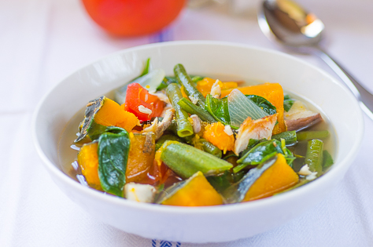

This dish combines the sweet and rich flavor of eggplant with the soft texture of the tofu cooked in the salty and tangy adobo style sauce.
Adobong Manok ₱145
Chicken Adobo is a type of Filipino chicken stew. Chicken pieces are marinated in soy sauce and spices, pan-fried, and stewed until tender.
Bicol Express₱155
3.Bicol Express, known natively in Bikol as sinilihan, is a popular Filipino dish which was popularized in the district of Malate.

Law-Uy ₱100
Law-uy is a vegetable soup dish popular in Mindanao, at first sight it looks like dinengdeng or laswa but this dish is totally different
Sinigang ₱160
Stew characterized by its sour and savoury taste. It is most often associated with tamarind and one of the more popular dishes in Filipino cuisine.
Karekare $180
Features a thick savory peanut sauce. It is generally made from a base of stewed oxtail, beef tripe, pork hocks, calves feet, pig's feet or trotters, various cuts of pork, beef stew meat..